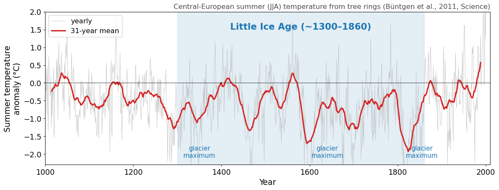
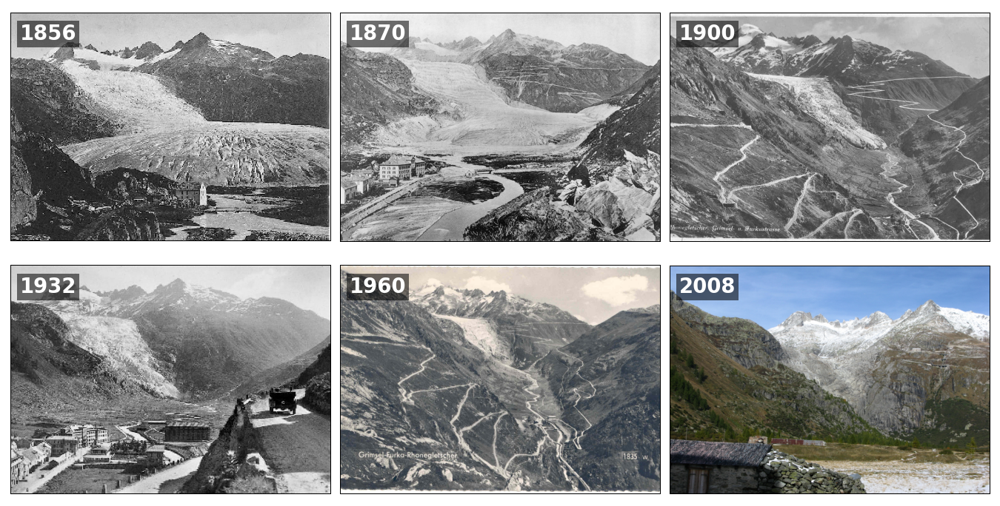
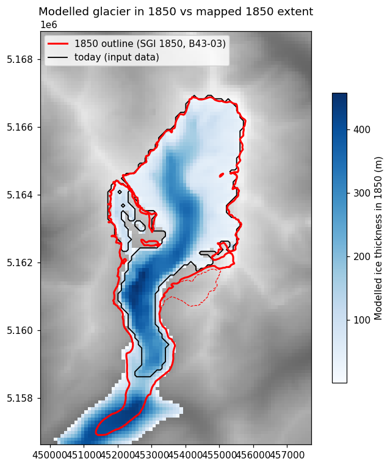
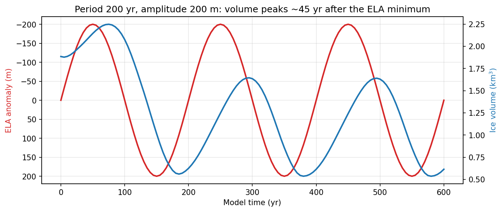
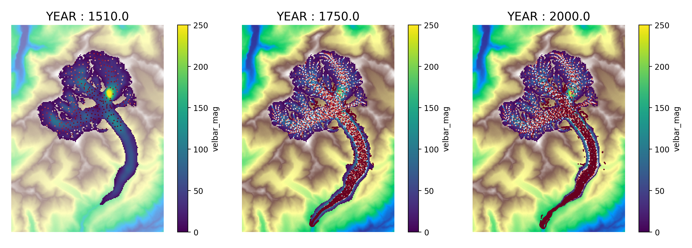
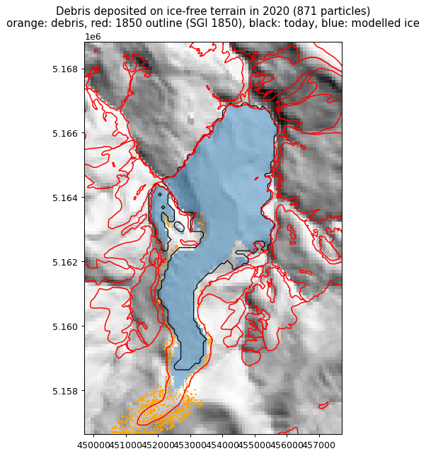

Session 3 — Lecture 3: Experiment deepening and reporting#
Guillaume Jouvet
Course format: 3 afternoons × 4 hours + 1 extra#
Hour 1 |
Hour 2 |
Hour 3 |
Hour 4 |
|
|---|---|---|---|---|
Week 1 |
Glacier processes |
Glacier modelling |
Tutorial |
Glacier selection |
Week 2 |
Intro to IGM, basic workflow (Rhone, then your glacier) |
Project |
Project |
Project |
Week 3 |
Experiment deepening, report |
Project |
Project |
Project |
(Week 4 |
dates and rate add-on |
G. King’s course |
Project |
Project) |
Part 1 — Goals of your mini-project#
Main question: how did your glacier evolve since the Little Ice Age, and how will it evolve until 2100?
Present: is the model state realistic today? (speeds vs. observations)
Past: can the model reproduce the LIA maximum (~1850) and the retreat to today? (moraines, old maps, GLAMOS length changes)
Future: 2020–2100 under climate scenarios (RCP 2.6, 4.5, 8.5).
➡️ Session 2, basic workflow: a calibrated model of your glacier & future ➡️ Session 3, experiment deepening: LIA extent, response time, moraines, climate controls, committed loss, lake appear., debris covering, societal impacts.
Finish the calibration: tips#
Control ↓ Target → |
Speeds |
Volume today |
1850 extent |
|---|---|---|---|
Ice flow: |
●●● |
● |
●● |
Melt: |
●●● |
●● |
|
Past climate: pre-1901 |
● |
●●● |
No single parameter fits all targets: e.g. a
melt_enhancerthat fits today’s volume may give a wrong 1850 extent ➡️ iterate between the three controls to find the best compromiseOne parameter at a time; no perfect fit: discuss the mismatch in the report
Tests with
ratio: 2, final runs withratio: 1
Part 2 — Experiment deepening#
First, fine-tune the model with the LIA extent: does the model reach the mapped 1850 extent? ➡️ closer calibration of the past, then re-run the future
Then, work on optional extensions (1 or 2, in depth), by increasing difficulty: A–E, Z (questions with the runs you know), then F) response time and G) moraines (for the most curious!)
Follow tutorial.ipynb, sections 6–8 (Session 3 part), in a fresh copy of the updated template: see the last slide
The Little Ice Age (LIA) in the Alps#

~1300–1860: cooler summers (~0.5–1 °C) ➡️ last maximum ~1850
Since then: retreat, accelerating since the 1980s
After the LIA: the Rhone Glacier from Gletsch#

LIA extent: the data#
The LIA maximum (~1850) is the best-documented past state: moraines, first topographic maps
Swiss Glacier Inventory 1850 (SGI 1850, GLAMOS; Maisch et al., 2000): outlines of all Swiss glaciers in 1850 ➡️ downloaded by the notebook
Historical maps, map.geo.admin.ch Journey through time: Dufour (1845–1865), Siegfried (1870–1926)
Moraines: swissALTI3D relief, SWISSIMAGE: youngest, fresh, unvegetated ridges in front of the glacier
Front retreat since ~1880: GLAMOS length changes (factsheet of your glacier)
LIA extent: calibrate the past#

Wrong in 1850 ➡️ tune pre-1901
delta_tempWrong today ➡️ tune
melt_enhancerFront too thin ➡️ tune ice flow
No single parameter fits all ➡️ iterate, best compromise
Then redo the future runs
Extensions work#
A) Committed loss: if today’s climate were kept unchanged, when would the glacier stabilise (beyond 2100), and at what volume compared with today?
B) Climate controls: what are the main controls of the future evolution? Can a +1 °C warming be compensated by more precipitation? If so, by how much?
C) Society: what could be the societal impacts of the future changes in the catchment hydrology caused by the glacier retreat for the different scenarios?
D) Lakes: Are proglacial lakes expected to form in bed overdeepenings?
E) Debris cover: if your glacier is debris-covered, melt is probably reduced: can it survive longer than a clean glacier? Can this hypothesis be tested?
Z) ELA history: Can you fit the glacier reconstruction with a simple ELA-based SMB model? If yes, what does it tell us about changes in ELA since the LIA?
F) Response time#
The response time is tested with an IGM user module for the SMB (instead of the built-in SMB used so far), smb_oscillating.py: the ELA oscillates, the glacier follows… with a delay
def update(cfg, state): # called at each time step
p = cfg.processes.smb_oscillating
t = float(state.t.numpy()) - cfg.processes.time.start
state.ela = state.ela_mean - p.amplitude * math.sin(2 * math.pi * t / p.period)
state.smb = state.usurf - state.ela
igm_run +experiment=params_response_time
F) Response time: example (Rhone Glacier)#

F) Glacier response times#
Lag between the ELA minimum and the volume peak (
plot_response_time)Other periods \(P\) (50–800 yr): how do the lag and the amplitude change? Towards which value does the lag tend for long periods? ➡️ response time \(\tau\). Compare with \(\tau \approx H/(-b_{terminus})\)
Size: do you expect \(\tau\) to grow with the volume?
Conclude: what happens to short climate variations? to long-term trends?
G) Moraines: tracking debris with particles#

Particles carried by the ice flow (Rhone Glacier, 1510 → 2000)
➡️ Passive “particles” can be added on top of the simulation to model the supply and transport of supraglacial debris (IGM module particles).
G) Moraines: reproduce the LIA moraines#

Retreat after 1850: debris left on ice-free terrain ➡️ modelled LIA moraines
Run
params_past_moraines, thenplot_morainesCompare with aerial photos / relief (map.geo.admin.ch)
Controls:
seeding, calibration of the pastLimits: debris comes from rock walls; moraine building not modelled
Tips for a good experiment design#
One question → one (or a few) experiments → one figure
Change one thing at a time (ELA,
delta_temp,melt_enhancer,tau_ref, …)Keep one YAML file per experiment, with a meaningful name (
params_past_ref.yaml,params_ssp585.yaml, …)Write down for each run: what you changed, why, and the outcome (a simple table/log)
Explore uncertainty: run a small ensemble (e.g. 3 values of a parameter) rather than one “perfect” run
Part 3 — The report#
≤ 1500 words (excluding captions and references), PDF
Written like a short scientific paper, for instance with this structure (a suggestion, not a strict rule):
Introduction: why model glaciers? state of knowledge, your research question(s)
Study site: location, characteristics, history, available observations
Methods: the model (what it does, not how you ran it: no code, no YAML), data, experiments, this is not a technical documentation
Results: figures, what you found
Discussion: answer your questions, limitations, uncertainties
Conclusion + references
Figures convey your results#
Typical figures: map of the glacier (thickness/speed) at key dates, time series of ice volume, flowline profiles, model vs. observations
Every figure: axes with units, legend, readable font, a caption
Compare model with observations whenever possible (LIA extent, GLAMOS length changes, observed speeds)
Fewer, better figures (4–6 is a good number): make a selection, do not show results you do not discuss. Quality over quantity
Customise your figures by adapting the provided plotting functions (
utils/helper.py)Get inspired by the figures of published papers, e.g. https://doi.org/10.3189/2013AoG63A434
Discussion: be critical#
Which results are robust? Which depend strongly on a poorly known parameter?
Main sources of uncertainty: initial ice thickness, SMB/climate forcing, sliding, starting from today’s geometry for the past, 100 m resolution, …
Does the model reproduce the observations? If not, why?
What would you do with more time/data?
Now: work on your project#
Today:
Finish the basic workflow on your glacier (Session 2)
Fine-tune the calibration of the past with the 1850 extent, then re-run the future scenarios
Then: extensions (A–G, Z) suitable for your glacier
Draft your figures
Start your report (outline, study site, methods)
Work in your fresh copy ~/work/my-glacier-s3/ (see next slide).
Updating the course material (glamod)#
cd ~/work/glamod && git restore . && git pull # erases any change made inside glamod
cp -r ~/work/glamod/session2/my-glacier ~/work/my-glacier-s3
~/work/glamod: the course material, updated bygit pull(incl.utils/helper.py); do not work in it~/work/my-glacier-s2(or~/work/rhone): your folder from last week~/work/my-glacier-s3: a fresh copy of the updated template (tutorial, data incl. 1850 outlines, parameter files) ➡️ work here from now on (rename it as you like)You may transfer last week’s calibration by editing the new parameter files (do not copy the old files over them): RGI ID, ice-flow parameters (
arrhenius,tau_ref). Climate andmelt_enhancerare recalibrated in Session 3